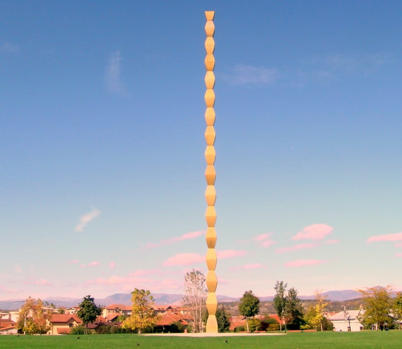
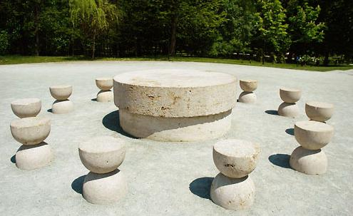
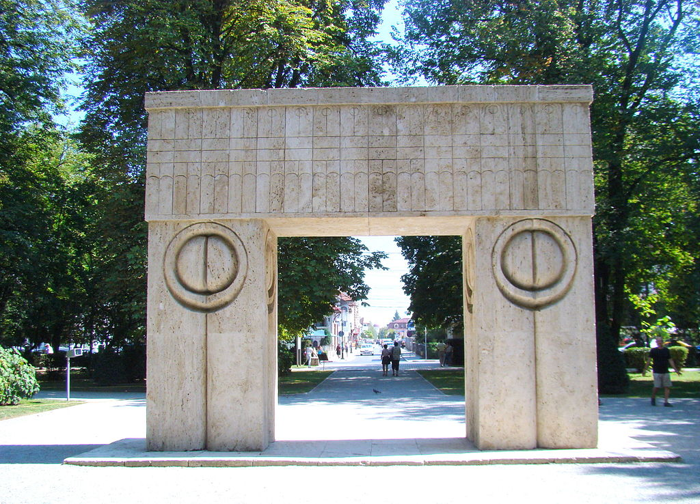

Târgu Jiu is a town at the southern foot of the Carpathians associated with the figure of Constantin Brâncuși, one of the most important Romanian artists of the 20th century. His outdoor sculptures are set in many parts of the city.The figure of the sculptor and painter Constantin Brâncuși was of great importance to the city's fame in the world. His outdoor sculptures are Târgu Jiu's greatest attractions today. Among others, The Infinity Column , The Table of Silence and The Kiss Gate , which is a popular place for lovers to photograph themselves.

- 1. The Infinity Column
- The sculpture by Constantin Brâncuși comes from 1938. Her design was based on the axis mundi symbolism. Also refers to funeral pillars used in the southern part of the country. The sculpture was erected in memory of young Romanians who died during the First World War.The sculpture is 29.33 m high. It has the form of a column consisting of 17 iron-shaped diamond-shaped modules. They were set on a metal core embedded in a concrete foundation, the depth of which reaches 5 m. In the 1950s, the communist government recognized sculpture as an example of bourgeois art and planned its demolition. However, the plan was not implemented and the monument itself was renovated in 1998-2000.As a curiosity, the column design was the inspiration for the Spanish sculptor Santiago Calatrava. His monumental obelisk, made of steel and bronze, measuring 120 m in height, is currently in Madrid.
- 2. The Table of Silence
- The Table of the Silence sees a large circular stone table surrounded by twelve hourglass seats, an arrangement which can draw comparisons to the Last Supper and is sometimes referred to as the Apostles Table.The circular table is a representation of where the soldiers would have gathered, perhaps around a family table, prior to battle. It is comprised of two blocks made from limestone. The first stone has a diameter of 200cm, while the larger stone placed on top measures in with a diameter of 215cm. The hourglass chairs are not actually positioned right next to the table and symbolise time disposed. It suggests the silence of this last gathering before the looming conflict and the awareness it may be their last.
- 3. The Gate of Kiss
- The Gate of the Kiss was created as an arch of triumph and is placed between the other two sculptures, built together within this ensemble. The gate was made of travertine and is 513 cm high, 545 cm long and the pillars sustaining the architrave have the width of 169 cm. The pillars are decorated with a circular motif, two half-circles separated by a decorative line that runs to the ground level. This motif is present on each side of the pillars. Some art critics have interpreted this motif as the eyes looking inside the gate, while other voices see a couple kissing in it. There are many interpretations of this artwork. Some voices see the triumph of life over death in this sculpture, while others understand this piece as a symbol of the transition to another life or eternal love that defies death. But one thing is sure - the presence of the funeral monument leitmotif.
- 4. Memorial house of Ecaterina Teodoroiu
- Ecaterina Teodoroiu (January 15, 1894 – September 3, 1917) was a Romanian woman who fought and died in World War I, and is regarded as a heroine of Romania.A Scouts' member, she had initially worked as a nurse but she subsequently decided to become a front-line soldier, being deeply impressed by the patriotism of the wounded and the death of her brother Nicolae, a sergeant in the Romanian Army. It was an unusual decision for a woman of that era, so she was sent to the front rather reluctantly. However, with the support of the Romanian royal family, soon she proved her worthiness as a symbol and as a soldier..
 
<------------------------ The Table of Silence
The Gate of Kiss ------------------------------>